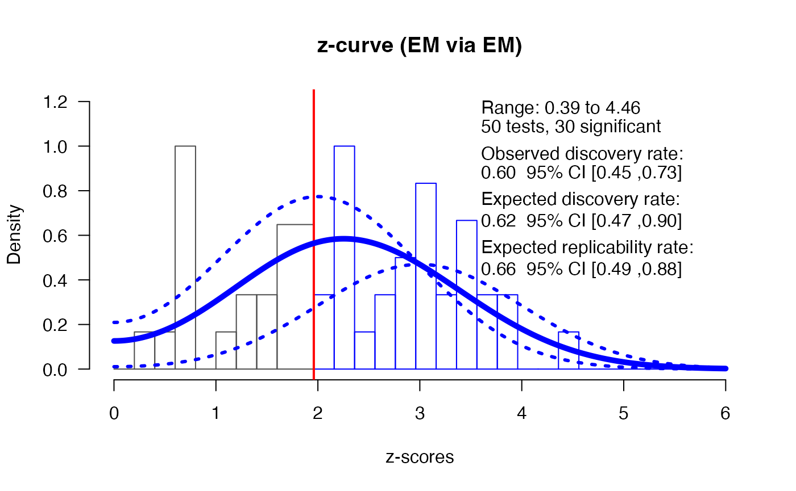
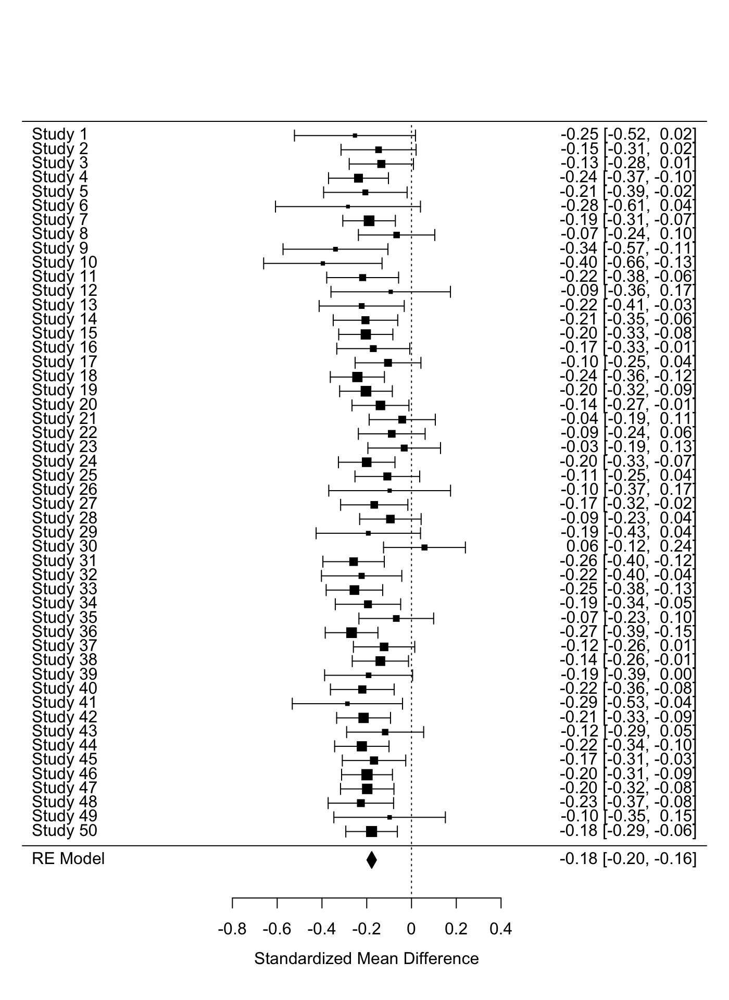
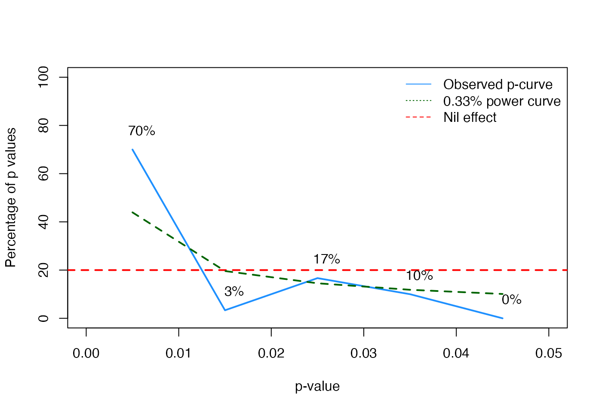

# devtools::install_github("scienceverse/scienceverse") # devtools::install_github("FBartos/zcurve") library(scienceverse) library(zcurve) library(dplyr) library(metafor) set.seed(404) scienceverse_options(verbose = FALSE) # Set number of simulations nsim <- 50
One benefit of storing all aspects related to machine readable hypothesis tests in a structured meta-data file is that the information can easily be accessed and re-used. In this example, we will show how a well-structured meta-data file can be used for a meta-analyses.
This example is part of:
Lakens, D., & DeBruine, L. M. (2020). Improving Transparency, Falsifiability, and Rigour by Making Hypothesis Tests Machine Readable. https://doi.org/10.31234/osf.io/5xcda
The problem
Researchers face several challenges when they want to perform a meta-analysis. The first problem is a lack of access to the data underlying the reported results. Many scientific papers do not report results adequately. Despite recommendations to always report and interpret effect sizes, many researchers don’t include effect sizes in their results section. Meta-analysists can attempt to manually calculate effect sizes, but this requires knowing the means, standard deviations, correlations for within comparisons, and exact sample sizes for each condition, which are often not reported either. Effect sizes can sometimes still be approximated from test statistics, but even these are often missing for non-significant results. The second problem a meta-analysist faces is a lack of transparency about which statistical tests in the results section are related to the predictions in the introduction section. This can make it difficult to select the best test to include in a meta-analysis.
The structured meta-study files we propose, and that are generated by scienceverse, solve both these problems, as long as 1) researchers include the data in the meta-study file, and 2) they specify for each hypothesis which statistical test result will corroborate or falsify the predictions. We will illustrate, in a simulated example, how we can easily perform a meta-analysis based on the information in the meta-study files.
Set up the studies
We will simulate 50 original studies, that will be meta-analyzed using 3 different meta-analytic approaches, namely z-curve, effect size meta-analysis, and p-curve. The studies all have the same true effect size, but sample sizes that vary between 30 and 300 for each condition. The code below generates 50 meta-study files. In this case, the files are all identical except for the datafiles (which vary because data is simulated). These 50 meta-study files are subsequently read in, and we show how to perform a z-curve, effect size meta-analysis, and p-curve using information from the meta-study files, based on either the stored test results from the analyses (i.e., the p-values) or by computing the required effect sizes from the raw data.
All studies measure the effect of a treatment on happiness among selected pet owners. The main research question is whether the treatment influences happiness - but all studies also include a second measured variable, asking people which pet they have (all participants have either a cat or a dog). The primary research question of the effect of the treatment on happiness is examined in an independent t-test.
# make a directory to store the meta-study files if (!dir.exists("metastudies")) dir.create("metastudies") # set up study sim_study <- study(name = "Study", abstract = "Examining the effect of an intervention on happiness") # Add a hypothesis sim_study <- add_hypothesis( study = sim_study, description = "Self-reported happiness will differ in the treatment group compared to the control group", id = "H1" ) # Add an analysis sim_study <- add_analysis( sim_study, id = "ttest", code = scienceverse::t_test(happiness~treatment, data = dat, alternative = "two.sided", paired = FALSE, conf.level = 0.95), software = R.version.string) # Add a criterion sim_study <- add_criterion( sim_study, id = "p_val", hypothesis_id = "H1", analysis_id = "ttest", result = "p.value", operator = "<", comparator = 0.05) # Add evaluation rules for corroboration and falsification sim_study <- add_eval(sim_study, hypothesis_id = "H1", "corroboration", description = "The hypothesis is corroborated if analysis 'ttest' is significant.", evaluation = "p_val") sim_study <- add_eval(sim_study, hypothesis_id = "H1", "falsification", description = "The hypothesis is falsified if analysis 'ttest' is not significant.", evaluation = "!p_val") # Simulate data, run analysis, and save the meta-data file nsim times for (i in 1:nsim) { sim_study$name <- paste0("Study", i) # Simulate some data and add it to the study # it will replace the previous data with the same data_id sim_study <- add_sim_data( sim_study, data_id = "dat", between = list(pet = c("cat", "dog"), treatment = c("control", "intervention")), dv = "happiness", n = sample(30:300, 1), mu = c(60, 62, 61, 65), sd = 18, plot = FALSE) # Run the analysis sim_study <- study_analyse(sim_study) # Save in machine-readable meta-study format filename <- sprintf("metastudies/study%02d.json", i) study_save(sim_study, filename, format = "json") }
Load the meta-study files
We can access all information in the 50 studies by loading the .json file with the study() function.
# get all the .json files in the metastudies directory file_list <- dir("metastudies", "*\\.json", full.names = TRUE) # load the metastudy files using scienceverse::study() study_list <- lapply(file_list, study)
We can get the (simulated) datasets from each study and see which variables they have in common.
# get all the datasets using the scienceverse::get_data() function all_data <- lapply(study_list, get_data) # get the column names from each dataset all_cols <- lapply(all_data, names) # find the common column names in all datasets Reduce(intersect, all_cols)
> [1] "id" "pet" "treatment" "happiness"In this case, we can see all studies share 4 variables: an id, pet, treatment, and happiness column. To facilitate meta-analyses in the future in real life data sets, it would be important to have standardized variable names, or codebooks with easily searchable information about the variables in the dataset. You can see the codebook for a scienceverse meta-study with the function get_codebook().
get_codebook(sim_study)
> Codebook for dat (Psych-DS 0.1.0)
>
> Dataset Parameters
>
> * name: dat
> * schemaVersion: Psych-DS 0.1.0
>
> Column Parameters
>
> * id (string)
> * pet (string)
> * Levels
> * cat
> * dog
> * Ordered: FALSE
> * treatment (string)
> * Levels
> * control
> * intervention
> * Ordered: FALSE
> * happiness (float)Checking the data quality remains an important step before performing a meta-analysis based on available meta-study files. We are not suggesting a meta-analysis can be performed automatically. But if a researcher has information about the variables collected in a study, the process of combining studies becomes straightforward if we can read in meta-study files that contain the raw data and details about the tests that are performed.
For example, for the last study we simulated, we have information about the analyses that were performed:
output_analyses(sim_study)
We know a t-test was performed. We can examine the results of the study:
output_results(sim_study)
We see a single hypothesis was tested, and corroborated, in this study. For a z-curve or p-curve analysis, this makes it easy to select the test to include in the meta-analysis. If multiple tests are performed in a single study, we can select the hypothesis test of interest by specifying the ID.
The results can be accessed easily with the get_result function. For the z-curve and p-curve analysis we would retrieve the p-value.
# Get all results get_result(sim_study)
> * statistic: -3.4392621
> * parameter: 1191.9927132
> * p.value: 0.0006035
> * conf.int:
> * -5.6693947
> * -1.5506558
> * estimate:
> * mean in group control: 59.511396
> * mean in group intervention: 63.1214213
> * null.value: 0
> * stderr: 1.0496511
> * alternative: two.sided
> * method: Welch Two Sample t-test
> * data.name: happiness by treatment
> * n:
> * control: 598
> * intervention: 598# Or only get the p-value get_result(sim_study, result = "p.value")
> [1] 0.0006035To perform a meta-analysis we need to compute the effect size and we need to code the sample size. These can be approximated from the test results (e.g., by calculating these from the t-value and degrees of freedom). However, if the data is shared, we can also compute the effect size based on the raw data. Data can be read in using the get_data function:
> id pet treatment happiness
> 1.1 S0001 cat control 62.04273
> 1.2 S0002 cat control 60.15729
> 1.3 S0003 cat control 67.74260
> 1.4 S0004 cat control 57.68412
> 1.5 S0005 cat control 35.20732
> 1.6 S0006 cat control 57.91921We will now illustrate how these functions, together with the meta-study files, can be used to perform a z-curve analysis, an effect size meta-analysis, and a p-curve analysis.
Z-curve analysis
There are several meta-analytic techniques to examine the literature. A relatively novel technique is z-curve, which is basically a meta-analysis of observed power (Bartos & Schimmack, 2020; Schimmack & Brunner, 2020). This analysis can be used to examine selection bias in the literature. Scientists often selectively report only statistically significant results in their manuscript, and fail to report non-significant tests they have performed. This selection for significant results introduces bias in the scientific literature.
Like a traditional meta-analysis, z-curve transforms observed test results (p-values) into z-scores. Using mixtures of normal distributions centered at means 0 to 6, z-curve aims to estimate the average power of the studies. The newest version of z-curve then calculates the observed discovery rate (the percentage of significant results, or the observed power), the expected discovery rate (EDR: the proportion of the area under the curve on the right side of the significance criterion) and the expected replication rate (ERR: the proportion of successfully replicated significant studies from all significant studies). Z-curve is able to correct for selection bias for positive results (under specific assumptions), and can estimate the EDR and ERR using only the significant p-values.
To examine the presence of bias, it is preferable to submit non-significant and significant p-values to a z-curve analysis, even if only the significant p-values are used to produce estimates. Publication bias can then be examined by comparing the ODR to the EDR. If the results of studies are shared in a well-structured meta-study file, all the p-values needed to perform a z-curve analysis are directly available, and it is clear which statistical test is related to a hypothesis is researchers are interested in including only specific analyses in the z-curve.
Since our 50 simulated studies have no bias, the z-curve analysis should yield results that (when looking at the values not excluded by the confidence interval) represent unbiased estimates for the EDR and ERR.
# Get the p-value for each analysis p_vals <- sapply(study_list, get_result, result='p.value') z <- qnorm(1-p_vals/2) # Perform the z-curve analysis using the z-curve package z_res <- zcurve::zcurve(z, method = "EM", bootstrap = 1000) plot(z_res, annotation = TRUE, CI = TRUE)

print(z_res)
> Call:
> zcurve::zcurve(z = z, method = "EM", bootstrap = 1000)
>
> Estimates:
> ERR EDR
> 0.6558697 0.6175144summary(z_res, all = TRUE)
> Call:
> zcurve::zcurve(z = z, method = "EM", bootstrap = 1000)
>
> model: EM via EM
>
> Estimate l.CI u.CI
> ERR 0.656 0.486 0.881
> EDR 0.618 0.466 0.881
> Soric FDR 0.033 0.007 0.060
> File Drawer R 0.619 0.135 1.146
> Expected N 49 34 64
> Missing N -1 -16 14
>
> Model converged in 88 + 39 iterations
> Fitted using 30 z-values. 50 supplied, 30 significant (ODR = 0.60, 95% CI [0.45, 0.73]).
> Q = -26.60, 95% CI[-30.08, -20.66]We see that 30 out of 50 studies were significant, which makes the observed power (across all these studies with different sample sizes) 60% (95% CI[0.45;0.73]). The expected discovery rate (EDR) does not statistically differ from the observed discovery rate, which means there is no indication of selection bias based on the z-curve analysis (and indeed, we know there was no selection bias in the simulation).
Meta-Analysis
The studies all had as their main goal to examine the effect of a treatment on happiness, but all studies also collected data on the pet each participant had. Because the raw data is saved in scienceverse, and all studies share the variables pet (dog vs cat) and happiness, we can easily perform a meta-analysis across all studies for both the effect of type of pet and the treatment on happiness.
We first perform a meta-analysis for the effect of pets and then a meta-analysis for the effect of treatment, across all studies. We do this by grouping all raw datasets together in a single dataset with study as an identifier using dplyr::bind_rows().
# Create a single meta-analysis dataframe merged_data <- dplyr::bind_rows(all_data, .id = "study")
Then we can calculate means, standard deviations, and get the sample sizes for all conditions (grouped based on pet, or treatment). We can use these descriptives to compute effect sizes for each study using the metafor package. We then perform a meta-analysis on the effect sizes computed from all studies.
We first perform the meta-analysis for the difference between pets and dogs on happiness.
# Create summary dataframe with means, sd, and n for pet effect MA_sum <- dplyr::group_by(merged_data, pet, study) MA_sum <- dplyr::summarize(MA_sum, m = mean(happiness), sd = sd(happiness), n = length(happiness))
> `summarise()` regrouping output by 'pet' (override with `.groups` argument)ma_dat <- metafor::escalc(m1 = MA_sum$m[1:nsim], m2 = MA_sum$m[(nsim+1):(nsim*2)], sd1 = MA_sum$sd[1:nsim], sd2 = MA_sum$sd[(nsim+1):(nsim*2)], n1 = MA_sum$n[1:nsim], n2 = MA_sum$n[(nsim+1):(nsim*2)], measure = "SMD") res <- metafor::rma(yi, vi, data = ma_dat, measure = "SMD") res
>
> Random-Effects Model (k = 50; tau^2 estimator: REML)
>
> tau^2 (estimated amount of total heterogeneity): 0 (SE = 0.0011)
> tau (square root of estimated tau^2 value): 0
> I^2 (total heterogeneity / total variability): 0.00%
> H^2 (total variability / sampling variability): 1.00
>
> Test for Heterogeneity:
> Q(df = 49) = 42.1931, p-val = 0.7435
>
> Model Results:
>
> estimate se zval pval ci.lb ci.ub
> -0.1010 0.0108 -9.3618 <.0001 -0.1222 -0.0799 ***
>
> ---
> Signif. codes: 0 '***' 0.001 '**' 0.01 '*' 0.05 '.' 0.1 ' ' 1metafor::forest(res)

Then we perform the meta-analysis for the treatment effect.
# Create summary dataframe for treatment effect MA_sum <- dplyr::group_by(merged_data, treatment, study) MA_sum <- dplyr::summarize(MA_sum, m = mean(happiness), sd = sd(happiness), n = length(happiness))
> `summarise()` regrouping output by 'treatment' (override with `.groups` argument)ma_dat <- metafor::escalc(m1 = MA_sum$m[1:nsim], m2 = MA_sum$m[(nsim+1):(nsim*2)], sd1 = MA_sum$sd[1:nsim], sd2 = MA_sum$sd[(nsim+1):(nsim*2)], n1 = MA_sum$n[1:nsim], n2 = MA_sum$n[(nsim+1):(nsim*2)], measure = "SMD") res <- metafor::rma(yi, vi, data = ma_dat, measure = "SMD") res
>
> Random-Effects Model (k = 50; tau^2 estimator: REML)
>
> tau^2 (estimated amount of total heterogeneity): 0 (SE = 0.0011)
> tau (square root of estimated tau^2 value): 0
> I^2 (total heterogeneity / total variability): 0.00%
> H^2 (total variability / sampling variability): 1.00
>
> Test for Heterogeneity:
> Q(df = 49) = 40.2735, p-val = 0.8083
>
> Model Results:
>
> estimate se zval pval ci.lb ci.ub
> -0.1779 0.0108 -16.4665 <.0001 -0.1991 -0.1567 ***
>
> ---
> Signif. codes: 0 '***' 0.001 '**' 0.01 '*' 0.05 '.' 0.1 ' ' 1metafor::forest(res)

In this case, not only were the meta-study files well structured, but all studies were identical. In practice, researchers would most likely need to organize the data in meta-study files so that it can be used for their analysis (e.g., generating additional grouping variables) but having the data, codebook, and analyses all accessible should greatly facilitate meta-analyses even for different sets of studies. If fields are able to standardize their measures and create shared naming conventions, one could search datasets across all available meta-study files to identify relevant studies.
P-curve Analysis
A p-curve analysis examines the distribution of p-values, and compares the distribution against the predicted pattern when the null-hypothesis is true, or when there is a true effect tested with some assumed power (Simonsohn, Nelson, & Simmons, 2014). Performing a p-curve analysis requires the results of statistical tests to be entered. The analysis can be performed by either retrieving the test statistics, and converting these to p-values, or by directly using the p-values (as we do in the code below).
Since our simulated studies have no bias, the p-curve analysis should indicate that the pattern of p-values looks like what would would expect if there is a true effect (a skewed distribution, with more small p-values than larger p-values).
# Adapted from https://github.com/nicebread/p-checker/blob/master/p-curve.R ncp33z <- function(power=1/3, p.crit=.05) { xc = qnorm(p=1-p.crit/2) #Find noncentrality parameter (ncp) that leads 33% power to obtain xc f = function(delta, pr, x) pnorm(x, mean = delta) - (1-power) out = uniroot(f, c(0, 37.62), x = xc) return(out$root) } theoretical_power_curve <- function(power=1/3, p.max=.05, normalize=TRUE) { # compute arbitrary test statistics for requested power library(pwr) d <- 0.2 n <- pwr.t.test(d=0.2, power=power)$n*2 crit <- seq(0.01, p.max, by=.01) pdens <- c() for (cr in crit) { pdens <- c(pdens, pwr.t.test(d=0.2, power=NULL, n=n/2, sig.level=cr)$power) } p.dens <- diff(c(0, pdens)) if (normalize == TRUE) p.dens <- p.dens/sum(p.dens) names(p.dens) <- as.character(crit) return(p.dens) } p.crit=.05 power=1/3 #get p-values from scienceverse studylist p_vals <- sapply(study_list, get_result, result='p.value') res <- data.frame() z <- qnorm(p_vals/2, lower.tail=FALSE) ppr <- p_vals*(1/p.crit) # pp-value for right-skew ppl <- 1-ppr # pp-value for left-skew ncp33 <- ncp33z(power=power, p.crit=p.crit) pp33 <- (pnorm(z, mean=ncp33, sd=1)-(1-power))*(1/power) res <- rbind(res, data.frame(p=p_vals, ppr=ppr, ppl=ppl, pp33=pp33)) # recode extreme values res$ppr[res$ppr < .00001] <- .00001 res$ppl[res$ppl < .00001] <- .00001 res$pp33[res$pp33 < .00001] <- .00001 res$ppr[res$ppr > .99999] <- .99999 res$ppl[res$ppl > .99999] <- .99999 res$pp33[res$pp33 > .99999] <- .99999 # remove non-significant values res[res$p > p.crit, ] <- NA # New p-curve computation (p-curve app 3.0, http://www.p-curve.com/app3/) p_curve_3 <- function(pps) { pps <- na.omit(pps) # STOUFFER: Overall tests aggregating pp-values ktot <- sum(!is.na(pps$ppr)) Z_ppr <- sum(qnorm(pps$ppr))/sqrt(ktot) # right skew Z_ppl <- sum(qnorm(pps$ppl))/sqrt(ktot) # left skew Z_pp33<- sum(qnorm(pps$pp33))/sqrt(ktot) # 33% p_ppr <- pnorm(Z_ppr) p_ppl <- pnorm(Z_ppl) p_pp33<- pnorm(Z_pp33) return(list( Z_evidence = Z_ppr, p_evidence = p_ppr, Z_hack = Z_ppl, p_hack = p_ppl, Z_lack = Z_pp33, p_lack = p_pp33, inconclusive = ifelse(p_ppr>.05 & p_ppl>.05 & p_pp33>.05, TRUE, FALSE))) } p_curve_3(pps = res)
> $Z_evidence
> [1] -7.573427
>
> $p_evidence
> [1] 0.0000000000000181753
>
> $Z_hack
> [1] 7.573427
>
> $p_hack
> [1] 1
>
> $Z_lack
> [1] 3.388543
>
> $p_lack
> [1] 0.9996487
>
> $inconclusive
> [1] FALSE# Create p-curve plot plot(NA, xlim=c(0, p.crit), ylim=c(0, 100), xlab="p-value", ylab="Percentage of p values") abline(h=1/p.crit, col="red", lty="dashed", lwd=2) legend("topright", lty=c("solid", "dotted", "dashed"), col=c("dodgerblue", "darkgreen", "red"), legend=c("Observed p-curve", paste0(round(power,2), "% power curve"), "Nil effect"), bty="n") bins <- table(cut(res$p, breaks=seq(0, p.crit, by=.01))) perc <- (bins/sum(bins))*100 # empirical p-curve lines(x=seq(0, p.crit-.01, by=.01)+.005, y=perc, col="dodgerblue", lwd=2) # 33% (or any other) power curve lines(x=seq(0, p.crit-.01, by=.01)+.005, y=theoretical_power_curve(power, p.max=p.crit)*100, col="darkgreen", lty="dashed", lwd=2) text(x=seq(0, p.crit-.01, by=.01)+.006, y=perc + 8, col="black", label=paste0(round(perc), "%"), cex=)
